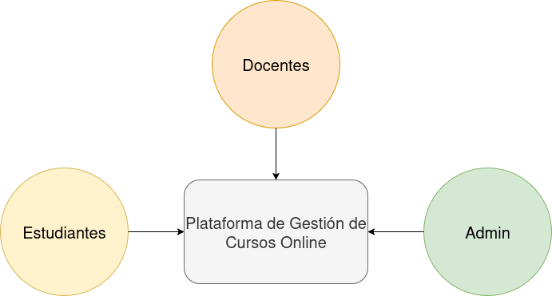
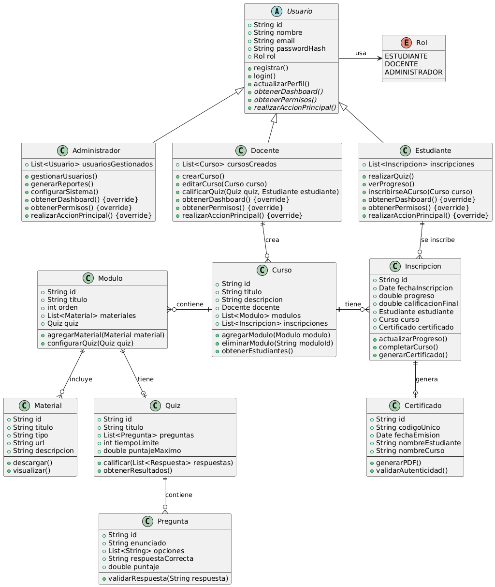
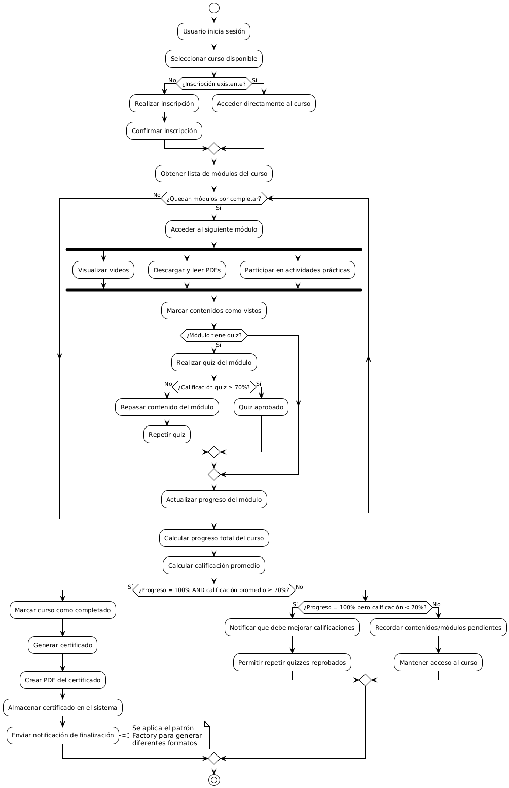
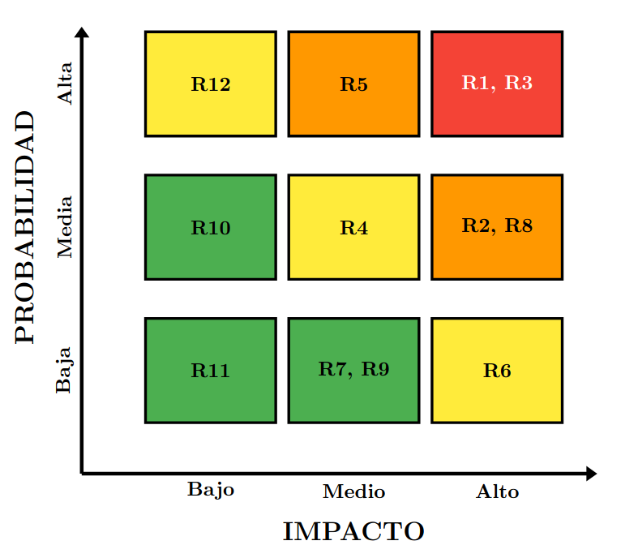

Plataforma de Gestión de Cursos Online
S. Araujo, G. Lettieri, A. Morales, L. Núñez, F. Palacios, J. Sepúlveda
Profesor: Eugenio Alberto Bravo García
Asignatura: Ingeniería de Software
Ingeniería Informática - INACAP
Asignatura: Ingeniería de Software
Ingeniería Informática - INACAP
29 de Mayo de 2025
Introducción

- Plataforma integral para cursos online
- Dirigida a estudiantes, docentes y administradores
- Objetivo: mejorar experiencia académica y gestión educativa moderna
Análisis del Contexto y Alcance
Estudiantes
- Inscripción a cursos
- Materiales multimedia
- Evaluaciones online
- Progreso en tiempo real
- Certificados QR
- Resúmenes IA
Docentes
- Creación y gestión de cursos
- Subida de materiales
- Diseño de evaluaciones
- Seguimiento de alumnos
- Calificación automática
Administradores
- Gestión de usuarios y roles
- Supervisión de cursos
- Reportes del sistema
- Configuración global
- Control de certificados
Proceso de Cocreación
Marco Metodológico
Modelo de Sanders y Stappers: Hacer, Decir, Usar
Participantes
- 8-12 Estudiantes (diferentes niveles)
- 6-8 Docentes (diversas áreas)
- 2-3 Administradores (coordinación)
Fases del Proceso
- Fase 1: Levantamiento de necesidades
- Fase 2: Co-diseño de soluciones
- Fase 3: Validación y refinamiento
≥85%
Tasa de Completitud
≥70
System Usability Scale
≥80%
Funcionalidades Validadas
Metodología y Planificación
Marco ágil Scrum
12 sprints | 101 tareas | 750+ horas estimadas
Fase 1 (Sprints 1-4)
280h
14h/semana/persona
- Autenticación y roles
- CRUD cursos básico
- Evaluaciones simples
- Certificados QR
Fase 2 (Sprints 5-8)
260h
13h/semana/persona
- Móvil y accesibilidad
- OAuth, 2FA, SSO
- IA resúmenes
- Observabilidad completa
Fase 3 (Sprints 9-12)
210h
10.5h/semana/persona
- Testing 500+ usuarios
- Seguridad enterprise
- CI/CD completo
- Release candidato
Work Breakdown Structure y Ruta Crítica
Estructura del Equipo
- PO/UX: 80-100h (Historias, feedback)
- Backend Lead: 140-160h (Arquitectura)
- Backend: 120-140h (APIs, lógica)
- Frontend: 130-150h (UI/UX)
- Fullstack: 140-160h (Integración)
- QA: 60-80h (Testing)
Sprints Clave
S1: Setup + Modelos básicos
S2: Evaluaciones + Progreso
S3: Certificados + Admin
S6: OAuth + 2FA
S8: IA Resúmenes
S11: CI/CD + UAT
S12: Release Final
Ruta Crítica Principal
FASE 1: Fundación
Levantamiento HU →
Modelos BD →
Sistema Quiz →
Calificaciones →
Certificados QR
↓
FASE 2: Funcionalidades
OAuth →
Métricas →
API IA →
Resúmenes Auto
↓
FASE 3: Producción
Optimización BD →
Testing E2E →
Seguridad Final →
Deploy
Duración total: 12 semanas |
Margen de seguridad: 3-5 días por fase
Requerimientos
Técnicas de levantamiento
Entrevistas con usuarios clave, historias de usuario, observación de plataformas similares
17 Requerimientos Funcionales
- Login con OAuth
- Gestión completa de cursos
- Materiales multimedia
- Evaluaciones automáticas
- Certificados QR verificables
- IA para resúmenes
- Notificaciones
- Historial académico
12 Requerimientos No Funcionales
- Seguridad: HTTPS, hash seguro
- Disponibilidad: ≥99.5%
- Rendimiento: ≤3s respuesta
- Accesibilidad: WCAG 2.1 AA
- Escalabilidad: 500 usuarios
- Backups automáticos
- Trazabilidad completa
- Observabilidad con métricas
Diagrama de Casos de Uso

Diagrama de Clases

Diagrama de Secuencia - Estudiante Realiza Quiz

Diagrama de Actividad - Flujo de Curso Online

Patrones de Diseño
Observer
Notificaciones automáticas
- Señales Django
- Desacoplamiento
- Múltiples observadores
- Extensibilidad
Singleton
Configuración global
- API, email, límites
- Instancia única
- Consistencia
- Control centralizado
Factory
Creación contenidos
- PDF, video, quiz
- Creación centralizada
- Validaciones específicas
- Mantenibilidad
Justificación: simplicidad, mantenibilidad, extensibilidad
Estándares de Calidad
ISO/IEC 12207
Ciclo de vida de software
- Procesos de adquisición
- Desarrollo con Scrum
- Operación y mantenimiento
- Entrega incremental
ISO/IEC 25000 (SQuaRE)
Métricas objetivas de calidad
Eficiencia:
≤2s latencia, <70% CPU
Confiabilidad:
≥99.5% uptime, >720h MTBF
Seguridad:
100% datos encriptados
Escalabilidad:
500+ usuarios concurrentes
Mantenibilidad:
>70% cobertura tests
Enfoque preventivo: calidad medida desde etapas tempranas del desarrollo
Trazabilidad y Riesgos
Matriz de Trazabilidad (RTM)
- Coherencia: RF/RNF ↔ UML ↔ Pruebas
- Criterios de aceptación claros
- Trazabilidad completa
- Control de cobertura funcional
Principales Riesgos Identificados
- R1: Fallas autenticación (Crítico)
- R3: Ataques seguridad (Crítico)
- R2: Pérdida datos (Alto)
- R8: Vulneración privacidad (Alto)
Medidas de Mitigación
Riesgos Críticos:
- Tokens JWT + pruebas estrés
- Validación entradas + sanitización
- Pruebas penetración
Riesgos Altos:
- Backups automatizados diarios
- Redundancia BD + replicación
- HTTPS obligatorio + RBAC
- Encriptación end-to-end
Matriz 3x3 de Riesgos
Identificación de Riesgos
| ID | Descripción | Nivel |
|---|---|---|
| R1 | Fallas en autenticación | Crítico |
| R2 | Pérdida de datos académicos | Alto |
| R3 | Ataques de seguridad | Crítico |
| R4 | Problemas de rendimiento | Medio |
| R5 | Fallas integración IA | Alto |
| R6 | Incompatibilidad navegadores | Medio |
| R7 | Retrasos desarrollo | Bajo |
| R8 | Vulneración privacidad | Alto |
| R9 | Problemas usabilidad | Bajo |
| R10 | Falta adopción usuarios | Bajo |
| R11 | Fallos certificados QR | Bajo |
| R12 | Dependencia APIs externas | Medio |

Escalas de Evaluación
Probabilidad:
- Baja: <10%
- Media: 10-50%
- Alta: >50%
Impacto:
- Bajo: <1 día
- Medio: 1-5 días
- Alto: >5 días
Acciones Requeridas
Bajo: Monitoreo rutinario
Medio: Planes contingencia
Alto: Mitigación activa
Crítico: Acción inmediata
Conclusiones
Integración exitosa teoría-práctica
- Proyecto integra conceptos fundamentales de Ingeniería de Software
- Aplicación práctica de metodologías ágiles, UML, patrones de diseño
- Cumplimiento de estándares internacionales de calidad
Solución integral y moderna
- Gestión completa: cursos, materiales, evaluaciones, certificados QR
- Valor agregado: IA para resúmenes automáticos de clases
- Plataforma funcional, escalable y alineada a necesidades académicas
¿Preguntas?
Muchas gracias por su atención